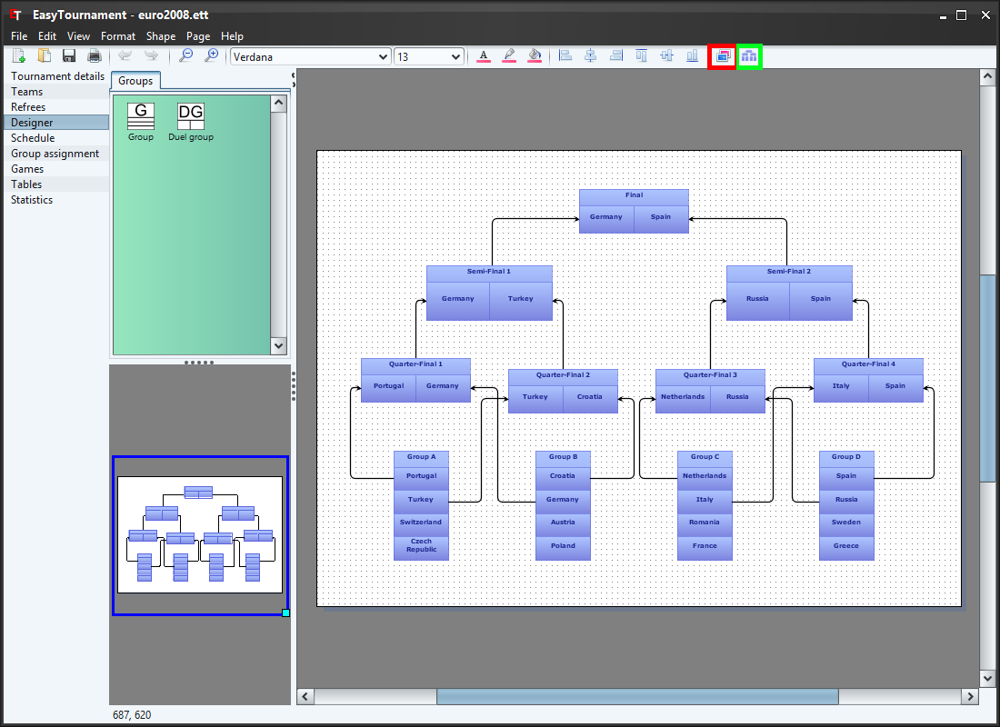

The designer is the heart of this application. Here you can define the progress of the tournament.
The available group elements are shown in the green box on the left side and can be dragged and dropped on the page. Already placed groups can be copied an deleted (delete button) as in any other graphics application.
A group can be edited with a double-click on a group or over the context menu (right mouse button). More informations to that can you find in the chapter Group.
Arrows indicate to which group a team will progress if it reaches a specific position. E.g. in the last image the team on the first place of Group A progresses to the Quarter-Final 1 and the winner of this Quarter-Final reaches the Semi-Final 1.
You can insert an arrow by clicking on the start position in a group, keep the button down while moving to the goal position and release it there.
In duel groups arrows starting at the left position are those for the winner and at the right side for the looser of this duel.
One Team can reach multiple groups but each position has at maximum one incoming arrow. Logically cycles are not allowed.
To move a group, click on the upper most part of the group and move the mouse whlie pushing the mouse button down.
The designer provides various graphic operations as changing the color or the fonttype. Before you apply such an operation, you have to select the shape to edit. If you would like to change the default color or fonttype, you can do this in the settings dialog. Further informations to this you can get in the chapter Settings.
The graphical abilities of the designer are currently quite restricted. Because we focus on the designing of a tournament and not on the graphical aspect, this will not change in the near future. If you would like to design a nice looking diagram, we advise you to export it as SVG file and edit the diagram in a graphics application like Inkscape.
 |
 |
If you click on the upper most line in the group (marked red in the above image) you can change the size of the title area by moving the mouse, while pushing the mouse button down.

With a click on the button "Team-View" (see image above) you can switch to the team view which shows the team names instead of the positions.
The diagram can be exported by selecting the menu "File"->"Export..." to edit it with another application. In the Export-Dialog you have to choose "Tournament diagram". In the Save-Dialog you are able to choose between JPG an XML.
It is also possible to import a diagram of another tournament by selecting the menu "File"->"Import...".